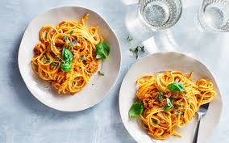

Tillbaka hem

ingredienser
- pasta
- pressad vitlöksklyfta
- olja
- förp krossade tomater
- matlagningsgrädde
- chiliflakes
- salt
- svartpeppar
- burk tonfisk
- fryst persilja
Gör så här
- Koka pasta enligt anvisning på förpackningen.
- Fräs vitlöken i hälften av oljan i en kastrull. Tillsätt tomater, tonfisk och ev matlagningsgrädde. Krydda med chiliflakes, salt och peppar. Låt koka upp.
- Blanda pastan med tonfisksåsen.
- Servera den direkt med persilja
Kalorier per ingrediens
| Ingrediens |
Kalorier |
| Pasta |
200 |
| Grädde |
150 |
| Vitlök |
10 |
| olja |
120 |
| krossade tomater |
80 |
| Tonfisk i vatten |
200 |
Lämna en kommentar
Detta recept är extra gott när det äts fräsht.